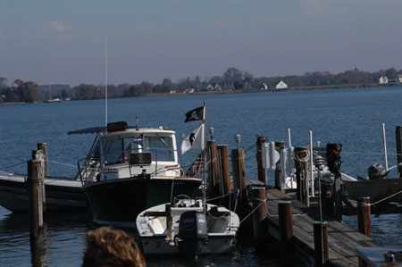

Last updated , Friday, January 29, 2010
+ Home + Back to the 2006 Schedule
2006
Island Creek Penguin Frostbite Regatta
(back to
Regatta Results)
November 11, 2006
The 2006
Island Creek Penguin Frostbite Regatta wasn’t so much a regatta as it was a

Those who survived David’s ICPFR Cocktail actually went out and raced. The real stars of the show were the RC team headed up by Tot O’Mara with her ever present assistant Queen Julie Cox. With unpredictable 30 degree shifts and good sized puffs created by a low located in Pennsylvania which sucked the southerly into the creek, they did an outstanding job of managing the 21 boat fleet and got off five races before the party resumed.
Penguins have enjoyed a resurgence during the end of this year. In addition to the usual regular suspects this fleet featured the return of sailors like Joe Balderson, Mike Rajacich and Joe Fernon. Return is hardly a strong enough word for skippers who haven’t been in a Penguin in 30 something years.
High School and Opti sailor Taylor Penwell, the youngest skipper in the fleet kept his nose clean and sailed Roger Pickall’s boat to a well earned fifth place. The oldest in the fleet, John Majane and Dick Kelly are something like four or more times Taylor’s age, a statistic which attests to the endurance of the class. Many of the sailors began in Penguins when they were much younger that Taylor.
Taylor, in fact, used to crew for long time skipper Bill Lane who demonstrated that there is an advantage to sailing with and listening to your wife. Barbara and Bill finished third and showed Taylor that the old man still has something to teach.
The top four finishers were handled by father- daughter (or son) and husband-wife teams and eight boats in all featured family crews. Skippers with grown children like David Cox and Sandy McAllister put the big kids in another boat and borrowed someone else's son or daughter just for the pleasure of trying to beat the grown kid.
In addition to the usual awards prizes were given for oldest and youngest, first in the water, best near capsize, best food (won by 16 year old Rachel Hecky for the second year in a row, this time for her Penguin cake), oldest combined ages (an unverified but uncontested second year win by Ebby and Nance Dupont) and a lot of other really serious stuff.
Finally, David Cox didn’t get the most original drink award because he gave the awards and couldn’t remember to give himself one. So, by editorial proclamation, congratulations David.
The results of the sailing part of this event are available on the Penguin website: www.penguinclass.com. The party results are still being tabulated and will be available at next years ICPFR. You may have to make reservations.